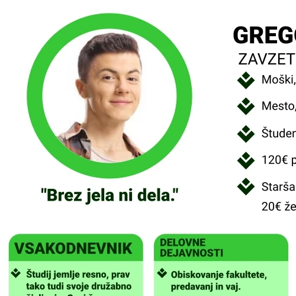
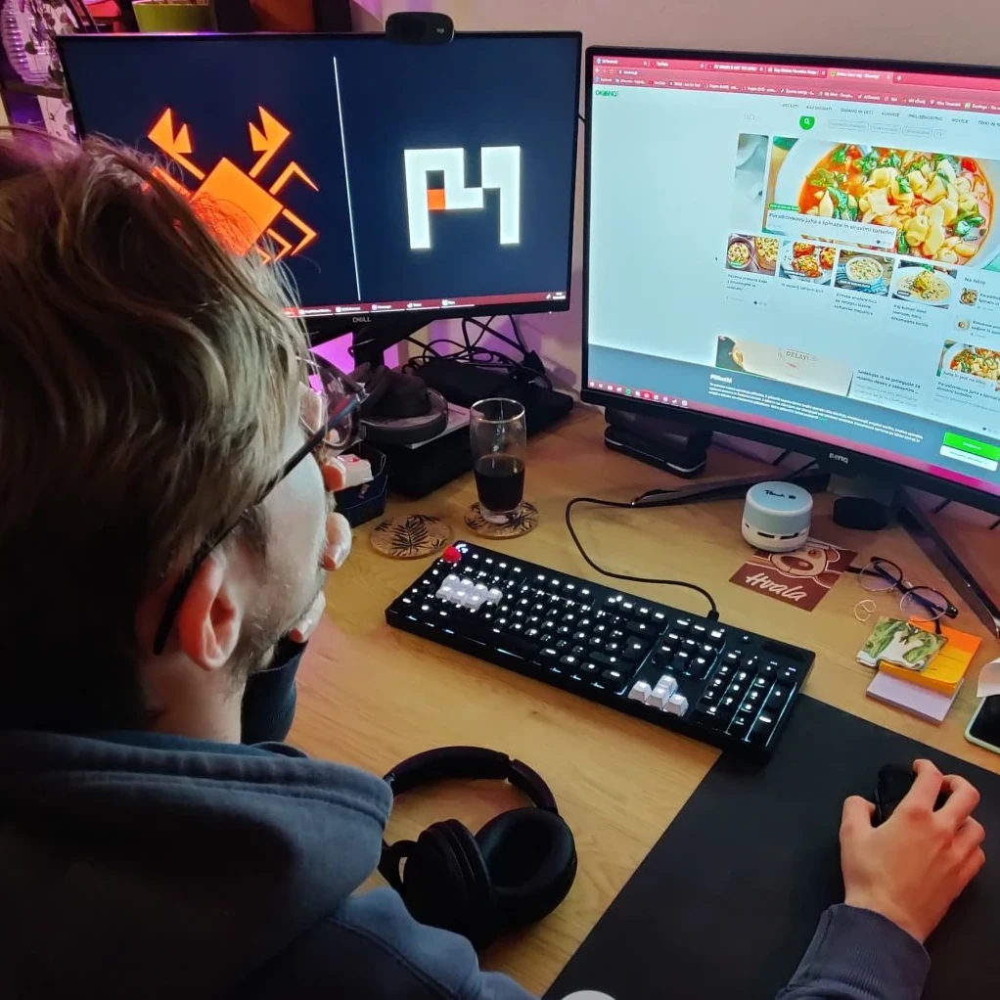
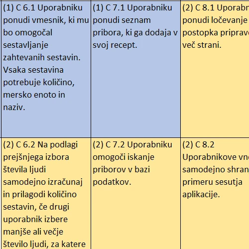
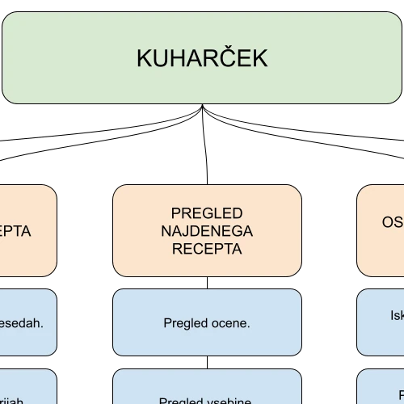
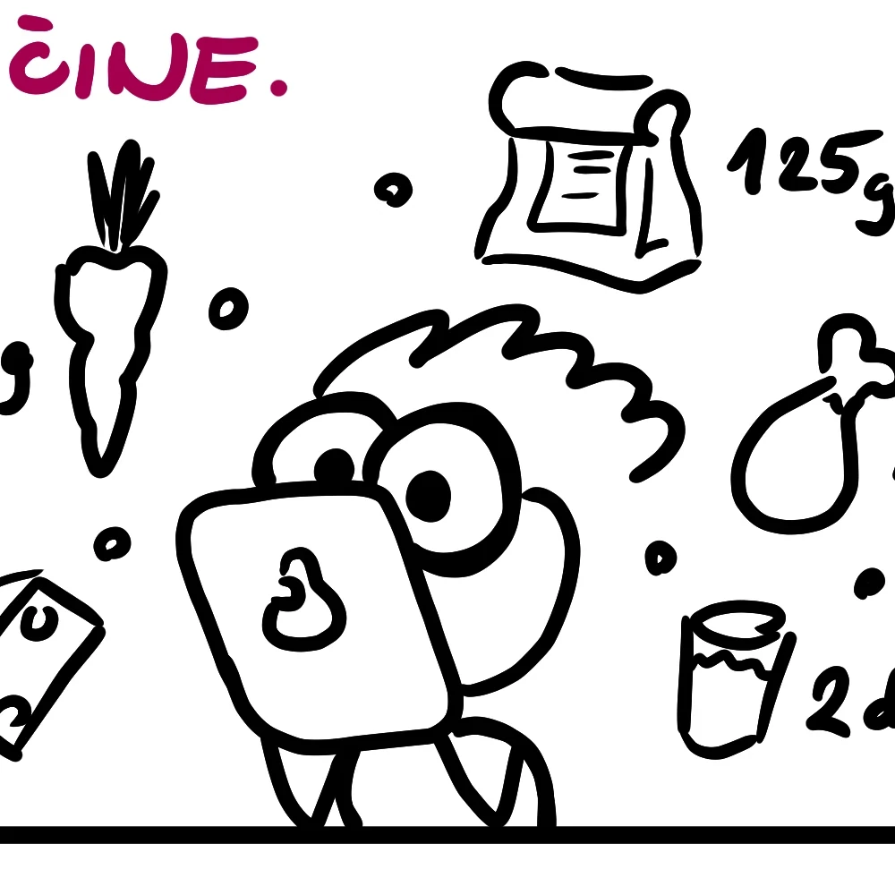
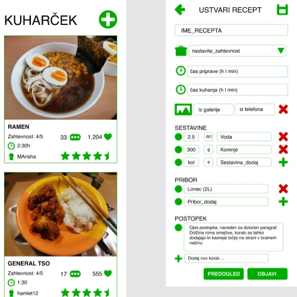

ARHIV NALOG
NALOGA 1

Ustvarjanje person
Naloga, v kateri smo ustvarili namišljene persone, ki predstavljajo potencialne uporabnike naše aplikacije. Navedli smo pomembne lastnosti, ki jih iščemo pri naših uporabnikih, njihovem ozadju in motivaciji, ki jo imajo za uporabo.
NALOGA 2

Needfinding
Naloga, v kateri smo opravili opazovanje in par intervjujev, da smo se lahko seznanili, kaj uporabniki pričakujejo od aplikacije na podlagi podobnih, obstoječih rešitev.
NALOGA 3

Analiza delovnih nalog
Naloga, v kateri smo navedli in razporedili delovne naloge po pomembnosti in namenu, ter kako bi jih prepisali v funkcionalnosti sistema.
NALOGA 4

Card Sorting
Naloga, v kateri smo ustvarili namišljene persone, ki predstavljajo potencialne uporabnike naše aplikacije. Navedli smo pomembne lastnosti, ki jih iščemo pri naših uporabnikih, njihovem ozadju in motivaciji, ki jo imajo za uporabo.
NALOGA 5

Storyboard
V tej nalogi smo na podlagi card sortinga ustvarili kratko zgodbo, kako bi naš potencialni uporabnik uporabljal aplikacijo Kuharček.
NALOGA 6

Prototip
V zadnjem delu naloge uresničimo grafično zasnovo in podobo aplikacije Kuharček s pomočjo prototipnega ogrodja Figma. Projekt smo grafično opremili in zasnovali po načrtu, izvedenem v storyboardu in ustvarili kratko, interaktivno aplikacijo.